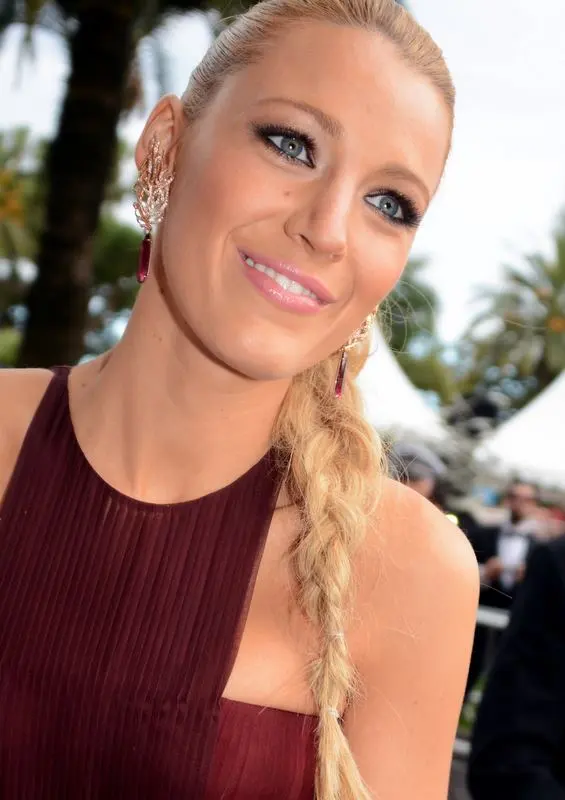
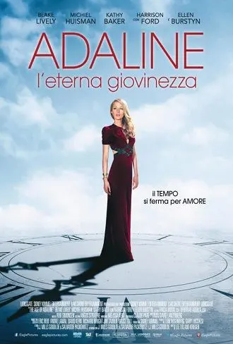

ADALINA - L'ETERNA GIOVINEZZA . . FILM DRAMMATICO-SENTIMENTALE
Ed eccoci a parlare di un altro film. Questa volta andiamo su un genere più alla portata di tutti.
Un film catalogato nella schiera dei
drammatico - sentimentale e in effetti lo è.
Vi sto parlando di Adalina - l'eterna giovinezza.
Un'altra pellico di questo 2015 e come dalle aspettative è stato bellissimo.
Appena lo vidi fui colpita subito da due aspetti
l'attrice e la trama fiabesca.
Attrice protagonista:
Blake Lively

Non so se già con la foto ho reso l'idea.
E' Serena Van Der Woodsen
del celebre ormai telefilm per teeneger Gossip girl.
Nonostante la sua giovane età, appena 28 enne, ha dato modo di farsi apprezzare sul grande schermo con film di un certo calibro tipo questo, film da intenditori in cui si è mostrata impeccabile nel suo ruolo da protagonista senza strafare.
Adoro questa ragazza per la sua eleganza e freschezza.
Mi piace come recita,il portamento e soprattutto per i ruoli che interpreta. Quindi appena vidi il trailer del film subito mi incantai e mi promisi di vederlo.
La locandina del film promette già tanto con la splendida figura di quest'attrice.
